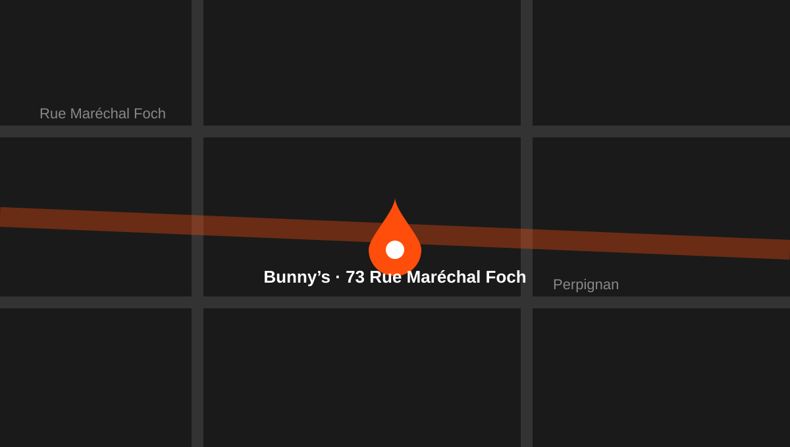

Horaires
- Lundi11h30 — 00h
- Mardi11h30 — 00h
- Mercredi11h30 — 00h (Armistice)
- Jeudi11h30 — 00h
- Vendredi11h30 — 00h
- Samedi11h30 — 00h
- Dimanche11h30 — 00h
La fiche Google n'affiche pas encore les horaires. Ajoutez-les ici.
05 · Contact
Téléphone, adresse, horaires et itinéraire.
05 — Infos
La fiche Google n'affiche pas encore les horaires. Ajoutez-les ici.
73 Rue Maréchal Foch
66100 Perpignan
